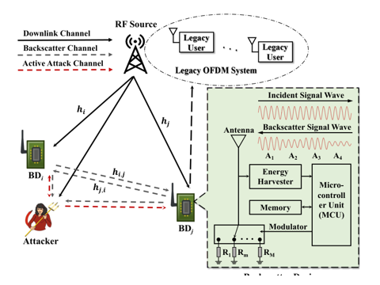
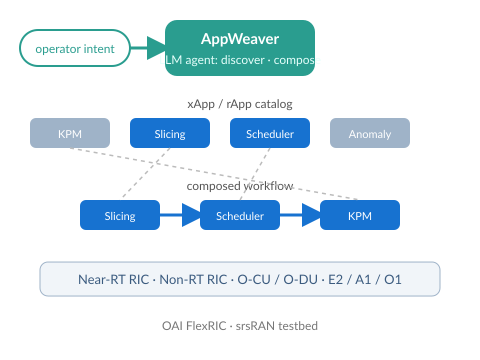
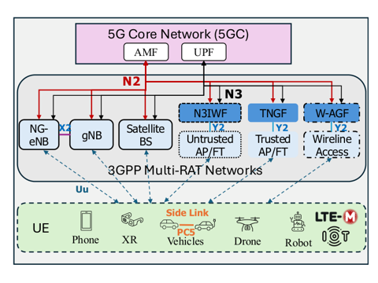
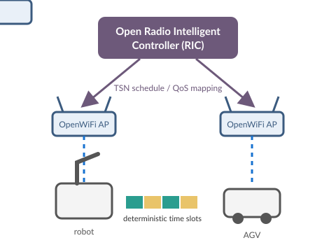
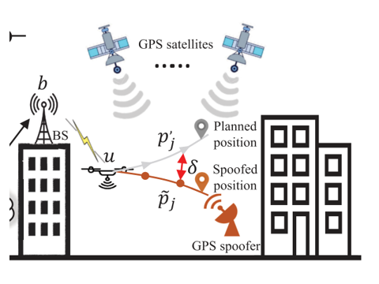
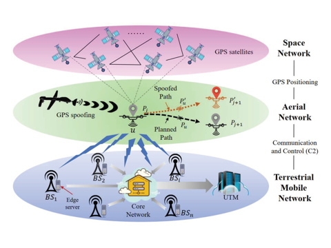
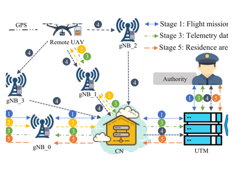

Postdoctoral Researcher · Aalto University, Finland
I work on wireless networks and AI with Prof. Riku Jäntti at the Department of Information and Communications Engineering. My current focus is agentic AI for automating O-RAN and 6G networks, GPS spoofing detection for cellular-connected UAVs, and secure, deterministic connectivity over DECT-2020 NR, Wi-Fi and 5G.
I hold a D.Sc. (Tech.) from Aalto University (2023) and an M.S. from Xidian University (2019). I received the Nokia Scholarship in 2022 and the IEEE GLOBECOM Best Paper Award in 2020.
Representative papers are shaded. Full list below and on Google Scholar.

A lightweight challenge-response authentication scheme that runs entirely at the physical layer between battery-free ambient backscatter devices.

An agentic AI framework that discovers, selects and composes O-RAN xApps and rApps into end-to-end workflows for 6G network automation.

Integrates DECT-2020 NR as a non-3GPP access into a multi-RAT architecture alongside Wi-Fi, with a prototype on Nordic hardware and open-source 5G core.
Replaces Bluetooth LE with DECT-2020 NR for secure device discovery and pairing, then hands off to Wi-Fi for high-speed transfer. Implemented on the Nordic nRF9161.

A radio intelligent controller built on OpenWiFi that brings time-sensitive networking guarantees to wireless links for industrial use.

Builds a fine-grained 3D radio map with ray tracing and Kriging, detects spoofing by comparing measured and predicted RSS with ML, and relocates the UAV with a particle filter to within 10 m.

Detects spoofed trajectories at the mobile edge from path-loss measurements alone, with above 97% accuracy using two base stations and no extra UAV hardware.

Derives an adaptive trustable residence area from serving-cell measurements and flags any reported GPS position that falls outside it.